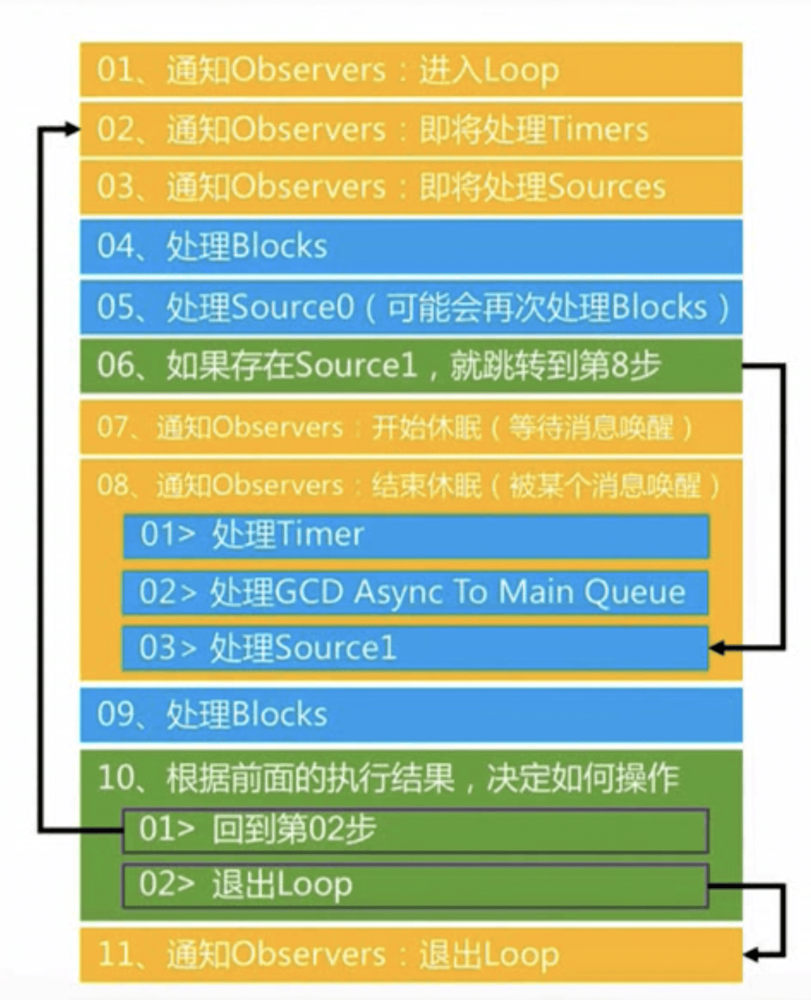

由 布多(budo) 发布于 2024-04-28
RunLoop是什么
RunLoop 是 iOS 开发中一个比较基础的概念，苹果有很多功能都是基于 RunLoop 实现的，例如线程中的自动释放池、NSTimer、系统事件响应、屏幕刷新等等。这篇文章将从源码的角度窥探 RunLoop 的内部实现细节。
在讲 RunLoop 之前，要先介绍一下线程。正常情况下，一个线程一次只能执行一个任务，当任务执行完线程就会退出，想要再执行任务只能再开启一个新线程。
如果我们想要一个机制，让线程在处理完任务后不自动退出而是一直处于待命状态，随时处理我们的任务。这种机制通常被称为 Even Loop。
Even Loop 在很多系统里都有实现，比如 Windows 里的消息循环，iOS 里的 RunLoop 等等。
iOS 中的 RunLoop 本质上是一个对象，这个对象管理了需要处理的事件和消息，线程执行了这个方法后，就会一直处于「接受消息->处理消息->等待消息」的循环中，伪代码如下：
void startRunLoop() { |
RunLoop源码分析
iOS 提供了两个 RunLoop 对象：NSRunLoop 和 CFRunLoopRef。其中 NSRunLoop 是基于 CFRunLoopRef 的封装，提供了面向对象的 API，CFRunLoopRef 是开源的，你可以下载 CoreFoundataion 源码来查看。
在 CoreFoundation 里，与 RunLoop 相关的类有以下 5 个：
- CFRunLoopRef(
RunLoop) - CFRunLoopModeRef(
Mode) - CFRunLoopSourceRef(
Source) - CFRunLoopTimerRef(
Timer) - CFRunLoopObserverRef(
Observer)
它们的关系如图1所示：
| 图1 |
|---|
 |
相关代码结构精简后如下所示：
typedef struct __CFRunLoopMode *CFRunLoopModeRef; |
结合上面的图和代码，我们可以发现，一个 RunLoop 对象里面有若干个 Mode，其保存在变量 _modes 中，但同一时间只能运行 _modes 中的一个 mode，用变量 _currentMode 表示。其中 Mode 对象包含了需要处理的事件 Source0、Source1、Observer、Timer。
RunLoop 的内部逻辑大致如图2所示：
| 图2 |
|---|
|  |
RunLoop 内部核心代码整理后如下所示：
// 入口函数1 |
从源码中我们可以发现，RunLoop 本质上就是一个函数，这个函数的内部有一个 do while 循环，当线程进入 RunLoop 后，就会一直停留在这个循环里，直到超时或手动停止等情况，才会结束退出。
RunLoopMode
RunLoopMode 是 RunLoop 的核心，RunLoopMode 里包含了 RunLoop 需要处理的 Source、Timer 和 Observer。
一个 RunLoop 里面可能有多个 RunLoopMode，但同一时间只能运行其中的一个 Mode，如果想要运行其它 Mode，需要退出当前 Mode，然后指定那个 Mode 重新进入 RunLoop。
之所以要区分不同的 Mode，是为了分隔不同 Mode 中的事件，让其相互独立，互不干扰。
RunLoopMode 本质上是一个 CFRunLoopModeRef 对象，这个对象中包含了 Source、Observer、Timer 这几个属性。我们不能直接创建和使用 CFRunLoopModeRef，只能通过字符串标识来间接的操作和获取指定的 CFRunLoopModeRef 对象。我们可以自定义 RunLoopMode，不过一般没有这个必要。苹果为我们提供了一些常用的Mode，分别是以下三个：
- kCFRunLoopDefaultMode
- UITrackingRunLoopMode
- kCFRunLoopCommonModes
除了这些 Mode，系统内部还有其它 Mode，不过我们一般都用不到。
需要特别说明的是，kCFRunLoopCommonModes 并不是一个真正的 Mode，它只是一个占位符，用来表示所有被标记了「Common」属性的 Mode，kCFRunLoopDefaultMode 和 UITrackingRunLoopMode 都被标记了「Common」属性；你可以使用以下函数手动将某个 Mode 标记为「Common」属性。
CFRunLoopAddCommonMode(CFRunLoopRef, CFRunLoopMode) |
kCFRunLoopCommonModes 的作用主要是为了减少代码量，下面我将用一个例子来说明它的作用：
假设当前线程中有 10 个 Mode（Mode1……Mode10），当我创建了一个定时器 timer，如果我想让这个定时器在这 10 个 Mode 下都能运行的话，我需要写出如下代码：
[[NSRunLoop currentRunLoop] addTimer:timer forMode:model1]; |
如果有了 kCFRunLoopCommonModes 的话，我们只需要保证这些 Mode 都被标记了「Common」属性，然后只需要一行代码即可实现上面同样的效果：
[[NSRunLoop currentRunLoop] addTimer:timer forMode:kCFRunLoopCommonModes]; |
下面我将向你解释苹果是怎么实现的：
struct __CFRunLoop { |
当某个 Mode 被标记为「Common」属性后，系统会自动将这个 Mode 添加到 RunLoop 的变量_commonModes 中。（UITrackingRunLoopMode 和 kCFRunLoopDefaultMode 都被标记了这个属性）当你将 timer 添加到 kCFRunLoopCommonModes 时，系统不会将这个 timer 添加到某个具体的 Mode 中，而是添加到属性 _commonModeItems 中，每次切换 Mode 时，系统会看一下当前 Mode 是否有「Common」属性（看一下 _commonModes 是否包含当前 Mode），如果有的话，系统会自动将变量 _commonModeItems 中的事件全部添加到当前 Mode 中去。
我们经常在 APP 中写下如下代码，用来解决定时器在页面滚动时失效的问题。
[[NSRunLoop currentRunLoop] addTimer:timer forMode:NSRunLoopCommonModes]; |
现在你应该明白这背后发生了什么。其实下面两行代码也能解决同样的问题：
[[NSRunLoop currentRunLoop] addTimer:timer forMode:NSDefaultRunLoopMode]; |
CFRunLoopSourceRef
Source有两个版本：Source0 和 Source1。
Source0 表示应用层的事件，例如 APP 内部的事件，我们写的函数、方法都属于 Source0。Source0 只有一个回调，它不能主动触发事件，需要先调用 CFRunLoopSourceSignal(source) 将这个 Source 标记为待处理，然后调用 CFRunLoopWakeUp(runLoop) 唤醒 RunLoop，让其处理这个事件。
Source1 表示系统层事件，一般用于系统内核或其它线程相互发送消息，例如当用户点击了手机屏幕时，系统就会生成一个 Source1 事件，Source1 有一个 mach_port 和一个回调，它可以主动唤醒休眠中的 RunLoop。
CFRunLoopTimerRef
CFRunLoopTimerRef 是一个基于时间的触发器，它和 NSTimer 是免费桥接的，当它被加入到 RunLoop 时，RunLoop 会在对应的时间点上注册一个回调，当时间点到时，RunLoop 会被唤醒执行那个回调。但是这个回调的时间点不是那么的精确，如果 RunLoop 当前正在执行一个耗时的任务，就可能会跳过那个定时器。
出于性能考虑，NSTimer 有一个实例属性 tolerance，它的默认值是 0，你可以通过修改它来影响 NSTimer 的回调精度。假设定时器本来会在 10:10:00 回调，如果 tolerance 的值是 2 的话，那么系统就会在 10:10:00~10:10:02 之间的任意一个时间点回调，这样做的好处是，系统可以将定时器事件和其它事件合并成一次处理，有利于系统优化性能和节省电量。
CFRunLoopObserverRef
CFRunLoopObserverRef 是一个观察者，每个 Observer 都包含一个回调，当 RunLoop 的状态发生变化时，观察者就能通过回调接收到这个变化，可以观察的状态有如下6个：
typedef CF_OPTIONS(CFOptionFlags, CFRunLoopActivity) { |
RunLoop与线程的关系
苹果不允许直接创建 RunLoop 对象，它只提供了两个用于获取 RunLoop 对象的函数：CFRunLoopGetMain 和 CFRunLoopGetCurrent，所以我们只能获取当前线程的 RunLoop 对象（主线程的 RunLoop 除外）。
相关代码整理后如下所示：
CFRunLoopRef CFRunLoopGetCurrent(void) { |
从上面的代码可以看出，线程和 RunLoop 的关系是一一对应的，其关系保存在一个全局字典里，字典的 key 是线程，value 是对应的 RunLoop 对象，在线程结束后会自动释放与之对应的 RunLoop 对象。
其中主线程的 RunLoop 对象在系统启动后会自动创建，子线程默认没有 RunLoop 对象，当你第一次获取时，系统会懒加载一个 RunLoop 对象，并将它与当前线程一一绑定。
RunLoop的作用
系统用 RunLoop 做了什么？
1. AutoreleasePool 和 RunLoop 的关系
首先，需要声明的是，AutoreleasePool 的实现跟 RunLoop 没有任何关系。有很多面试官会问类似 “AutoreleasePool 和 RunLoop 有什么关系” 的问题，但实际上他们想问的是，被 __autoreleasing 修饰的对象在什么时候释放？例如以下代码，对象 obj 是什么时候释放的？
- (void)viewDidLoad { |
实际上，被 __autoreleasing 修饰的对象可能有 3 种不同的释放时机：
a. 第一种情况是直接被 @autoreleasepool{} 包裹起来，例如以下代码，这种情况下，对象 obj 的释放时机是在 @autoreleasepool{} 结束时自动释放。
- (void)viewDidLoad { |
b. 第二种情况是线程中没有 RunLoop 对象，例如在子线程中使用 __autoreleasing 修饰对象，例如以下代码，对象 obj 会在当前线程销毁时自动释放。
- (void)viewDidLoad { |
c. 第三种情况也是最复杂的情况，当线程中有 RunLoop 对象。有很多以前的博客会告诉你，系统会自动在 RunLoop 中注册观察者，分别是进入RunLoop、RunLoop 休眠、RunLoop 退出，然后在回调中处理相关逻辑。但这个答案目前已经失效了，我在调试时发现，苹果并不会注册相关观察者，而是会直接在相关调用中插入处理逻辑。简单的说，在以前，被 __autoreleasing 修饰的对象会在 RunLoop 休眠前才统一释放，这可能会导致积累许多 __autoreleasing 对象；现在的逻辑是当 RunLoop 切换事件时就释放了。
一些题外话：我在很多项目中发现这样一种现象，伪代码如下：
@autoreleasepool {
// ………
}
>}许多开发者都会在几乎所有的 for 循环中手动加上一个 @autoreleasepool{}，他们的期望是想降低内存峰值，但其实大可不必，如果 for 循环里没有被 __autoreleasing 修饰的对象，这么做并没有任何好处，只有当 for 循环里有很多 __autoreleasing 对象时，才能起到你想要的效果。
注：有很多对象你没有显式的用 __autoreleasing 修饰，但其实它也是 __autoreleasing 对象，因为系统/框架在返回这个对象时，自动将它加入了自动释放池，例如这行代码
[NSString stringWithFormat:@"test%d", 12]系统在返回这个对象时已经把它加入了自动释放池。
2. NSTimer 和 RunLoop 的关系
NSTimer 本质上就是 CFRunLoopTimerRef。当一个 NSTimer 被注册到 RunLoop 之后，RunLoop 会在重复的时间点上注册好事件，例如 11:00:00、11:00:03、11:00:06，不过，RunLoop 为了节省资源，并不会在非常准确的时间点回调。
3. performSelecter:afterDelay: 方法和 RunLoop 的关系
当调用 NSObject 的 performSelecter:afterDelay: 时，系统会在内部创建一个 Timer 并添加到当前线程的 RunLoop 中，所以，如果当前线程没有 RunLoop 的话，这个方法就会失效。
4. 事件响应和 RunLoop 的关系
苹果在主线程的 RunLoop 中注册了一个 Source1 用来接收系统事件，当一个硬件事件（触摸、晃动等等）发生后，系统会将这个事件通过 mach port 转发给 APP，APP 会在 Source1 的回调中收到转发过来的事件，之后，APP 会生成一个 Source0 事件在应用内部进行分发。
5. 界面刷新和 RunLoop 的关系
苹果在主线程的 RunLoop 中注册了一个 Observer 用来监听 RunLoop 即将进入休眠和即将退出的状态，当 UI 发生变化时，例如修改 frame、color 等等，或者手动调用 UIView/CALayer 的 setNeedsLayout、setNeedsDisplay 方法后，这个 UI 对象会被标记为待处理，然后添加到一个全局容器中。苹果会在 Observer 的回调里处理所有的 UI 对象并执行实际的绘制和调整，然后更新 UI 界面。
我们能用 RunLoop 做什么？
1. APP卡顿监测
大致原理是在主线程的 RunLoop 中注册一个 Observer，然后在回调中开启一个子线程用来判断主线程是否发生了卡顿，判断逻辑大致是，如果 RunLoop 在某一个状态下持续时间过长（一般是 60 ms），则判定为卡顿。我写了一个 Demo 实现了相关逻辑，你可以在 WXLLagMonitoring 这里查看。
2. 线程保活
原理是开启一个子线程的 RunLoop，让这个子线程执行完任务后不被释放而一直处于 RunLoop 模式中，这样我们就可以一直使用这个子线程处理一些任务，而不用每次都开启一个新的线程。我写了一个 Demo，你可以在 WXLThread 这里查看。
3. 性能优化
- 将多次操作合并成一次操作。例如系统的界面更新就利用了 RunLoop 的这个特性，还有框架 FDTemplateLayoutCell 也用到了这个特性。
- 监听线程的不同 Mode 来将一些耗时操作放在特定 Mode 下执行，例如监听主线程 RunLoop 的 kCFRunLoopDefaultMode 状态，当用户滑动时系统会切换到 UITrackingRunLoopMode 状态，此时不对页面上的图片进行加载和渲染，等 RunLoop 切换到 kCFRunLoopDefaultMode 时再加载和渲染图片。(
话说我感觉这么做有点复杂，直接监听 ScrollView 控件的滑动状态不也可以实现一样的效果么)
RunLoop 相关面试题
讲讲 Runloop 是什么？项目中有用到吗？
RunLoop 可以理解成是一个循环，一旦在线程中启动了 RunLoop，线程就会一直处理这个循环中，有事件需要处理时线程会自动处理这些事件，没有事件处理时，线程会自动休眠。一般情况下，中小项目基本不会直接使用 RunLoop，可能会间接用到它，例如一些三方库里可能会用到；大项目可能会直接使用 RunLoop，例如监控主线程卡顿、延迟或集中处理一些事件等等，主要都是用来做一些性能优化方面的操作。
请描述一下 Runloop 内部的实现逻辑。
简单的说，RunLoop 内部就是一个 while 循环，内部会判断是否有事情可做，如果有的话就处理相关事情，如果没有的话就调用相关内核函数进行休眠。详细实现逻辑请跳转至 RunLoop源码分析 阅读。
自动释放池和 RunLoop 的联系。
请跳转至 AutoreleasePool 和 RunLoop 的关系 阅读。
RunLoop 和线程的关系。
点击跳转到 RunLoop与线程的关系 段落。
RunLoop 和 NSTimer 的关系？
请跳转至 NSTimer 和 RunLoop 的关系 阅读。
RunLoop 中的 Mode 是什么?
请跳转至 RunLoopMode 阅读。